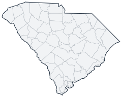

Historical county changes, 1790–1990 › South Carolina

| Name↕ | Unit↕ | Existed↕ | FIPS↕ |
|---|---|---|---|
| Abbeville County | county | 1790–1990 | 45001 |
| Aiken County | county | 1880–1990 | 45003 |
| Allendale County | county | 1920–1990 | 45005 |
| Anderson County | county | 1830–1990 | 45007 |
| Bamberg County | county | 1900–1990 | 45009 |
| Barnwell County | county | 1800–1990 | 45011 |
| Beaufort County | county | 1790–1990 | 45013 |
| Berkeley County | county | 1890–1990 | 45015 |
| Calhoun County | county | 1910–1990 | 45017 |
| Charleston County | county | 1790–1990 | 45019 |
| Cherokee County | county | 1900–1990 | 45021 |
| Chester County | county | 1790–1990 | 45023 |
| Chesterfield County | county | 1800–1990 | 45025 |
| Clarendon County | county | 1790–1990 | 45027 |
| Colleton County | county | 1800–1990 | 45029 |
| Darlington County | county | 1800–1990 | 45031 |
| Dillon County | county | 1910–1990 | 45033 |
| Dorchester County | county | 1900–1990 | 45035 |
| Edgefield County | county | 1790–1990 | 45037 |
| Fairfield County | county | 1790–1990 | 45039 |
| Florence County | county | 1890–1990 | 45041 |
| Georgetown County | county | 1790–1990 | 45043 |
| Greenville County | county | 1790–1990 | 45045 |
| Greenwood County | county | 1900–1990 | 45047 |
| Hampton County | county | 1880–1990 | 45049 |
| Horry County | county | 1810–1990 | 45051 |
| Jasper County | county | 1920–1990 | 45053 |
| Kershaw County | county | 1800–1990 | 45055 |
| Lancaster County | county | 1790–1990 | 45057 |
| Laurens County | county | 1790–1990 | 45059 |
| Lee County | county | 1910–1990 | 45061 |
| Lexington County | county | 1810–1990 | 45063 |
| Marion County | county | 1800–1990 | 45067 |
| Marlboro County | county | 1790–1990 | 45069 |
| McCormick County | county | 1920–1990 | 45065 |
| Newberry County | county | 1790–1990 | 45071 |
| Oconee County | county | 1870–1990 | 45073 |
| Orangeburg County | county | 1790–1990 | 45075 |
| Pendleton County | county | 1790–1820 | 45075.1 |
| Pickens County | county | 1830–1990 | 45077 |
| Richland County | county | 1790–1990 | 45079 |
| Saluda County | county | 1900–1990 | 45081 |
| Spartanburg County | county | 1790–1990 | 45083 |
| Sumter County | county | 1790–1990 | 45085 |
| Union County | county | 1790–1990 | 45087 |
| Williamsburg County | county | 1810–1990 | 45089 |
| York County | county | 1790–1990 | 45091 |
Note: Decimals in FIPS codes come from Forstall, who gives every county a code, including counties that no longer exist. A county abolished between 1930 and 1990 keeps the code it had. However, a county which was abolished prior to 1930 never received a code. Such a county is given the code of the county which precedes it alphabetically plus a decimal to hold its place in the list.
Source: Richard L. Forstall (1996), Population of States and Counties of the United States: 1790 to 1990, U.S. Bureau of the Census (public domain). Always check a row against the scan it links to.